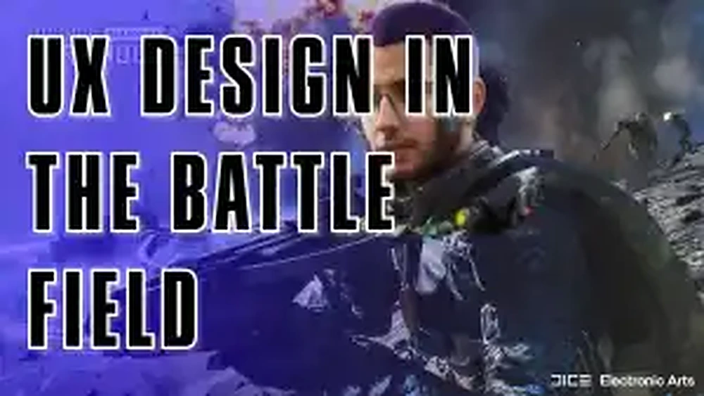

A look at how interface, HUD and information hierarchy affect the player experience in a large-scale shooter.

View full imageUX in a chaotic battlefield
Large-scale shooters create intense cognitive load. Players need to read threats, objectives, teammates, ammo, health and spatial cues while moving quickly and reacting under pressure.
In this context, UX is not a decorative layer. It directly affects performance and comprehension.
Information hierarchy
A good HUD must prioritize what matters in the moment. Combat-critical information should be easy to perceive without forcing the player to stop playing.
If everything demands attention, nothing becomes clear.
Visual noise
Battlefield-style games already contain explosions, vehicles, weather, smoke, UI markers and environmental movement. Too much interface noise can make the experience harder to read.
The UX challenge is to give players awareness without covering the world.
Team play
Indicators for squads, objectives, revives and positioning help transform individual action into coordinated play.
Good interface design can make teamwork more understandable and rewarding.
The lesson
In shooters, UX lives in milliseconds. The player’s ability to understand and act quickly can depend on small interface decisions.
Clarity, timing and hierarchy are essential for keeping the experience intense without becoming confusing.
takeaway